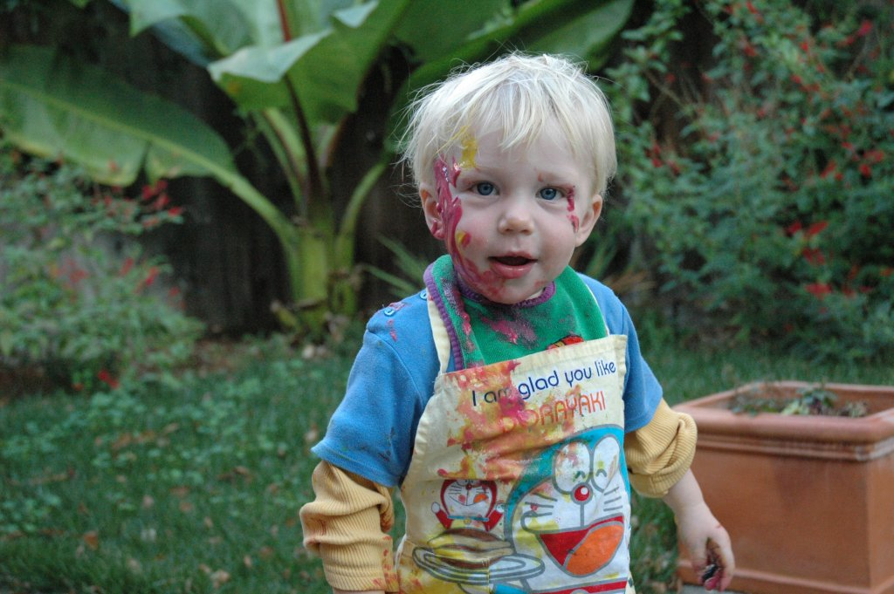

Born in 2004, Milo Moses is a French-American artist that studied mathematics at UC Berkeley until he discovered his inner passion for conceptual art. Establishing himself as a promenent figure in the Figuration Libre movement with his online art instalation titled 'The Gallery', Moses is definantly a leading figure in the artistic world. His early work was much more abstract than it is now. His current work touches on the themes of Randomness, Order, Beauty, and what it means to be art.
Demonstrating a wide array of influences- From Neils Borgh to the Surrealist movement- Moses' work is leading the way of what it means to be an artist in the digital age, not making art despite computers but truly utilising the artistic potential of such powerfull machines; this is most promenently seen in his use of randomness, something nigh impossible with powerfull machines.
Currently residing in Berkeley, California, Moses does not tour museums and galleries as he regects these capatilist institutions, opting instead to make his art free in the public domain. Needless to say, we can only expect more avant garde art from Moses in the years and decades to come.
